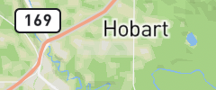
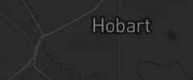

        <div id="map"></div>
         <ion-button id="openPermisions" class="btn-ubicacion btn" shape="round">
            <ion-icon name="navigate-outline" slot="icon-only" color="primary"></ion-icon>
        </ion-button>
        <ion-button id="open-custom-dialog" class="btn btn-capas" shape="round">
            <ion-icon name="layers-outline" color="primary"></ion-icon>
        </ion-button>
        <ion-modal id="example-modal" #modal trigger="open-custom-dialog">
            <ng-template>
                <div class="wrapper">
                    <h1>Mapas</h1>

                    <ion-list lines="none">
                        <ion-item button="true" detail="false"
                            (click)="cambiarMapa(modal,'mapbox://styles/mapbox/satellite-streets-v12')">
                            <ion-avatar slot="start">
                                
                            </ion-avatar>
                            <ion-label>MapBox Satelite</ion-label>
                        </ion-item>
                        <ion-item button="true" detail="false"
                            (click)="cambiarMapa(modal,'mapbox://styles/mapbox/outdoors-v12')">
                            <ion-avatar slot="start">
                                
                            </ion-avatar>
                            <ion-label>MapBox Outdoors</ion-label>
                        </ion-item>
                        <ion-item button="true" detail="false"
                            (click)="cambiarMapa(modal,'mapbox://styles/mapbox/dark-v11')">
                            <ion-avatar slot="start">
                                
                            </ion-avatar>
                            <ion-label>MapBox Dark</ion-label>
                        </ion-item>
                        <ion-item button="true" detail="false"
                            (click)="cambiarMapa(modal,'mapbox://styles/mapbox/light-v11')">
                            <ion-avatar slot="start">
                                
                            </ion-avatar>
                            <ion-label>MapBox light</ion-label>
                        </ion-item>
                    </ion-list>
                </div>
            </ng-template>
        </ion-modal>
        <ion-modal id="example-modal" #modalPermissions trigger="openPermisions">
            <ng-template>
                <div class="wrapper">
                    <h1>Permisos</h1>
                    <h5>¿ Permitir acceso a <br> tu ubicacion actual?</h5>
                </div>
                <div class="buttons-modal">
                    <ion-button fill="solid" color="primary" (click)="miubicacion(modalPermissions)">
                        aceptar
                    </ion-button>
                    <ion-button fill="clear" color="medium" (click)="modalPermissions.dismiss()">
                        cancelar
                    </ion-button>
                </div>
            </ng-template>
        </ion-modal>